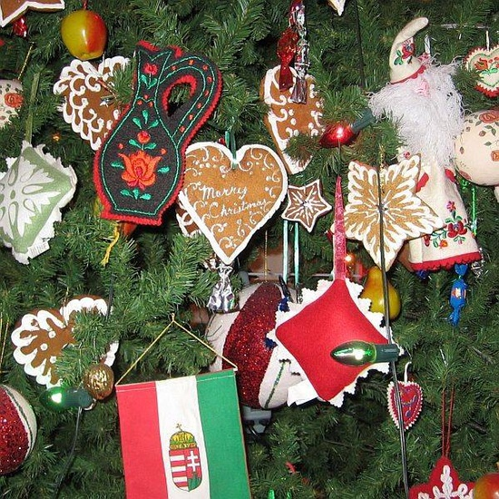

In Hungary, Christmas (December 25) is the biggest holiday. On Christmas Eve, Christians observed several traditions. It was forbidden to request or give loans. It was also not good for women to sew, weave or wash dishes, because otherwise they would have misfortune. On Christmas Eve the laundry washed and hung to dry brought disease to the family. Young men were not allowed to eat fatty foods, lest their future wives be stolen. The festive Christmas meal was complete only if it had the traditional roast pork, oven-baked turkey, mayo and walnut scones. The Christmas tree was decorated with fruit, cakes, sweets and candles.
